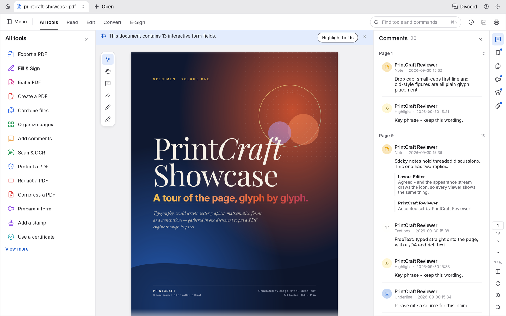

PdfCraft
A free, open-source PDF reader and organizer that works like Acrobat - view, combine, split and secure PDFs on your own machine.
Open, search, annotate, combine and split PDFs with the same tools Acrobat has - without paying Adobe $20 a month.

How does it work?
You need to read, combine, split or annotate PDFs regularly - but Acrobat costs $20 a month and free viewers can't organize or secure files.
You have 5 scanned contracts and need to combine them into one PDF, rearrange the pages, and add a password.
You open PdfCraft and drop in your PDF files, or point an AI agent at it through its command interface.
Open a PDF by double-clicking it, or let Claude Code drive PdfCraft through its built-in command channel.
Your PDF files - including encrypted ones (RC4 through AES-256) and complex documents with layers, forms and comments.
A 200-page report with threaded comments, a fillable tax form, or a set of PDFs to merge.
It renders, organizes and manipulates PDF files locally, with crash recovery and atomic saves.
- View PDFs with tiled rendering for deep zoom, bookmarks, search-as-you-type, and multiple layouts (continuous, single, two-up)
- Organize pages: rotate, delete, insert, move, combine files, extract or split by page count
- Fill forms, toggle layers, read and add threaded comments, and handle attachments
- Save with incremental, atomic writes that keep original bytes intact - with autosave every minute
The project's own test: 963 of 983 pdf.js test files open and render cleanly, zero crashes across the corpus.
Organized, annotated or secured PDF files, saved on your own computer.
- Combined or split PDFs5 scanned contracts merged into one file, or a 200-page report split into chapters
- Filled forms and commentsA tax form filled out and saved, or a contract with your threaded review comments
- Secured filesA PDF with AES-256 encryption and owner-set permissions, ready to share
What changes for me?
Without it
- Combining, splitting or securing PDFs means paying Adobe $20 a month for Acrobat - or hunting for a free tool that handles each task separately.
- Free PDF viewers show the pages but can't organize, combine, fill forms or add security.
With it
- One free app for reading, combining, splitting, annotating and securing PDFs - with Acrobat's tool layout.
- Autosave and crash recovery protect your work. Incremental saves keep the original bytes intact.
How hard is it to try?
Effort
- Download PdfCraft for your computer (Mac, Windows or Linux) and install it.
- Open a PDF and try the tools: search, rearrange pages, and combine two PDFs into one using Organize > Combine.
- Try filling a form if you have a fillable PDF, and check that the comments panel shows threaded annotations.
What it takes on your computer
- Space on disk
- No data found for installer size. Builds from source with
cargo run --release -p pdfcraft(requires Rust 1.90+). - Memory while it runs
- No data found. Uses tiled rendering for efficient memory use on large documents.
- Runs on
- Mac (universal), Windows (x64, arm64, x86), Linux (x86_64, aarch64, needs glibc 2.35+), FreeBSD and the web (via WebAssembly).
Paste this into Claude Code. It runs your safety scan first, then a 10-minute test.
/skillspector https://github.com/storytold/pdfcraft If that scan passes: download and install PdfCraft, open a sample PDF, try the page organizer and combine two files. 10 minutes max.
Should I?
Great if you...
- You need one free app that reads, combines, splits, annotates and secures PDFs - instead of paying Adobe $20 a month
- You handle encrypted or complex PDFs (forms, layers, threaded comments) and want a viewer that renders them correctly
Skip it if...
- You need to edit PDF text or create PDFs from scratch - PdfCraft is a viewer and organizer, not a full Acrobat editor. Content editing is not built yet.
- You need OCR, Office import/export or XFA forms - those features are listed as thin or missing
Instead, you could look at
- SumatraPDFA fast, lightweight free PDF viewer on Windows. Very stable but no page organization, form filling or annotation.
- OkularKDE's free document viewer. Annotations and form filling, but no page organization or file combining.
Is it safe?
- Security advisories: 0GitHub's advisory list, checked Oct 10
- Searches for CVEs, vulnerabilities, malware and scams5 results read, including the national CVE database: nothing found
- Are the stars earned?6.9K stars, 77 contributors, 549 commits. findarepo: looks organic
Watch out for
- About half of Acrobat Pro's features. PdfCraft views, organizes and secures, but cannot edit existing text, create new PDFs from scratch, or run OCR. It is a workbench, not a full editor.
- Part of the ArtCraft suite by storytold. Same maker as PhotoCraft, LightCraft, FilmCraft and ArtCraft. Early alpha, built by one developer with AI.
- Rendering uses an external crate. Pages are currently rendered by the hayro crate while the project builds its own renderer. Quality may vary on complex layouts.
- Linux needs glibc 2.35 or newer. That means Ubuntu 22.04+, Debian 12+ or equivalent. Older distributions are unsupported.
Who's using it, and for what?
PdfCraft is 9 days old and in early alpha. Named real-world use is still very early.
We couldn't find anyone describing real use of it yet. That's normal for a brand-new repo, and it's worth knowing.